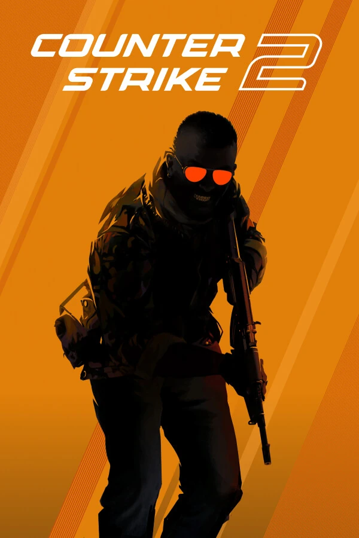
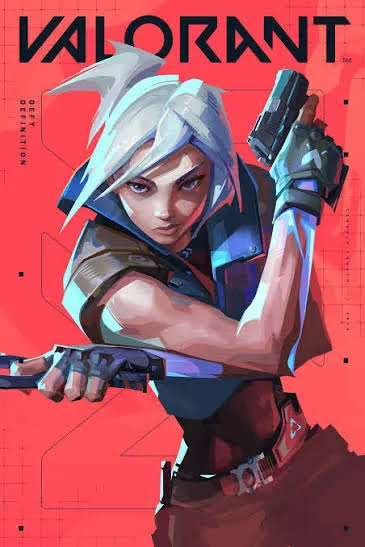

La suite standalone definitiva per FiveM, Fortnite, Valorant e CS2. Ottimizzazione del clock a 0.500 ms nativi, configurazione automatica MSI Mode su GPU e conformità al 100% per i controlli PC-Check Screenshare degli staffer.
Timer resolution bloccato, priorità I/O giochi a High, TCP NoDelay e Standby RAM ripulita.
Trascina lo slider per vedere il comportamento reale di Windows stock con stuttering e micro-freeze contro la stabilità perfetta di G Optimizer 2.0.
Nessun file spazzatura, nessun cheat e nessuna modifica che ti fa bannare. Solo ottimizzazioni hardware native pulite.
Forza il clock del processore dal valore stock di 15.6 ms al limite hardware minimo di 0.500 ms via chiamate native Kernel P/Invoke. Risposta del puntatore mouse istantanea.
KERNEL P/INVOKEResta silenzioso nella tray. Rileva istantaneamente l'avvio di FiveM, Fortnite, Valorant o CS2, imposta la priorità High, svuota la RAM e passa al Mini-HUD in sovrimpressione.
100% AUTOMATICOA differenza degli optimizer scadenti, G Optimizer preserva i 10 servizi obbligatori (DPS, BAM, DiagTrack, EventLog). Gli scanner degli staffer (Echo, Devour) danno esito verde al 100%.
SCRENSHARE CERTIFIEDAttiva il supporto Message Signaled Interrupts (MSI) e assegna priorità High su Scheda Video (GPU), Scheda di Rete e controller USB, azzerando i conflitti di interrupt IRQ.
PCI-EXPRESS LATENCYPulisce in 1 solo clic le cartelle cache di FiveM (server-cache, priv) e i log di crash senza toccare le impostazioni grafiche e senza corrompere i server preferiti.
1-CLICK CLEANEsegue un benchmark in tempo reale su Cloudflare, Google e Quad9. Applica con 1 clic il resolver DNS più veloce sulle schede di rete attive via chiamate Netsh native.
PING MINIMOProfili hardware e software dedicati. Nessun compromesso sulla grafica: solo massimi frame per secondo e risposta ai comandi istantanea.
Elimina i cali di frame a Legion Square e durante le sparatorie veloci tra veicoli su server pesanti.
Build fight fluidi e sub-tick delay per posizionare muri e scale istantaneamente senza freeze negli end-game.

Registrazione colpi 1:1 sub-tick perfetta. Azzeramento DPC latency spikes su scheda audio e mouse.

Flick precisi e massima stabilità con Riot Vanguard attivo. Nessuna modifica non certificata.
Elimina lo stuttering improvviso dopo 30 minuti di gioco liberando la memoria Standby in background.
Uscire dal gioco con Alt-Tab provoca cali di framerate, crash del motore grafico e perdita di concentrazione nei match ranked. Con la Dashboard Remota Web integrata in G Optimizer, puoi monitorare l'hardware e attivare i boost direttamente dallo schermo del tuo telefono o tablet sulla rete WiFi locale.
Non sporcare il tuo campo visivo con barre FPS invasive che consumano preziose risorse GPU durante i fight.
Gli anti-cheat considerano sospetti gli hook di rendering overlay. La dashboard remota gira su WebSocket locale e non tocca la memoria video del gioco.
Tocca un pulsante sul cellulare mentre sei in attesa o in lobby per liberare istantaneamente la RAM Standby e preparare il PC al prossimo round.
A differenza degli optimizer amatoriali che disabilitano servizi critici causando ban istantanei dagli staffer (Echo, Devour, Ocean), G Optimizer 2.0 preserva i registri di sistema e garantisce un controllo 10 su 10 totalmente pulito.
| Parametro di Controllo Staffer (Echo / Devour) | Optimizer Scadenti da YouTube/Discord | G Optimizer 2.0 Standalone |
|---|---|---|
| DPS (Diagnostic Policy Service) | Spento / Disattivato (BAN) | 100% Attivo & Integro (PASS) |
| BAM (Background Activity Moderator) | Chiavi Registro Eliminate (BAN) | Preservato & Conforme (PASS) |
| Prefetch & SysMain Windows | File Corrotti / Disabilitati | Gestione Nativa Sicura (PASS) |
| Windows EventLog & Crash Logs | Svuotati (Sospetto occultamento) | Registro Eventi Intatto (PASS) |
| DLL Injection / Hook nei Processi | Rilevati come Cheat/Ghost | ZERO INIEZIONE • 100% Pulito (PASS) |
| Timer Resolution Kernel | Tool esterni instabili e buggati | 0.500 ms Kernel P/Invoke (PASS) |
Testato sui controlli screenshare dei server FiveM più severi d'Italia. Zero falsi positivi.
Crea automaticamente un punto di ripristino di sistema prima di applicare modifiche sostanziali.
G Optimizer è un singolo file .exe standalone. Quando lo chiudi, non lascia processi residenti né residui.
Ogni tweak è documentato e testato per la massima stabilità. Cerca per nome o filtra per categoria hardware.
Seleziona il tuo gioco principale e la tua scheda grafica per calcolare la riduzione di latenza stimata.
Attivazione diretta e immediata. Pagamento sicuro e licenza personale legata al tuo HWID senza attese.
Perfetto per testare la suite e azzerare l'input lag durante i tuoi tornei.
Risparmi il 17% rispetto al mensile con tre mesi di massime prestazioni continue.
Paga una volta sola e possiedi G Optimizer per sempre, con tutti gli aggiornamenti futuri.
Nessun installer, nessun bloatware e nessuna registrazione obbligatoria.
Scarica l'archivio ZIP pronto all'uso, estrailo sul desktop ed esegui GOptimizer.exe.
Scarica il pacchetto ZIP ed estrai la cartella sul tuo Desktop o dove preferisci.
Avvia il software (se richiesto clicca "Ulteriori informazioni" > "Esegui comunque").
Seleziona il profilo FORMULA 1 per applicare tutti i tweak di latenza e timer in 1 secondo!
Recensioni reali raccolte sul nostro server Discord ufficiale tramite il comando /vouch.
"Giocavo su FiveM a 55 FPS con continui micro-scatti nelle sparatorie. Dopo aver aperto G Optimizer e applicato il profilo FiveM Safe ho fatto 110 FPS costanti e il mouse sembra incollato alla mano. Straconsigliato!"
"Ero scettico per i PC-Check FiveM perché in passato mi avevano bannato per optimizer con i servizi spenti. Ieri ho fatto il controllo screenshare dallo staffer: 10 su 10 verde, zero avvisi. Top assoluto."
"Il Timer Resolution a 0.500 ms e l'MSI mode sulla GPU mi hanno cambiato completamente il feeling su Fortnite e CS2. Non esiste nessun tool gratis o a pagamento fatto così bene e leggero."
Tutto quello che c'è da sapere su sicurezza, funzionamento e licenze.
Il software applica ottimizzazioni a livello di Kernel Windows: forza il timer di sistema a 0.500 ms (anziché 15.6 ms), attiva l'MSI Mode con priorità High su GPU e Scheda di Rete, ottimizza i buffer TCP/IP, ripulisce la Standby List della RAM e applica curve lineari per mouse e tastiera, eliminando micro-stuttering e input lag.
ASSOLUTAMENTE NO. G Optimizer 2.0 preserva integralmente i 10 servizi obbligatori di Windows (DPS, DiagTrack, EventLog, SysMain, BAM, ecc.) che i tool screenshare (Echo, Devour) controllano. Non inietta alcun file nel processo di gioco ed è sicuro al 100%.
Essendo un software standalone appena compilato e privo del costoso certificato annuale Microsoft EV ($400/anno), Windows SmartScreen mostra un avviso di sicurezza preventivo. Basta cliccare su "Ulteriori informazioni" e poi su "Esegui comunque". Il programma è pulito al 100%.
Quando apri il software scaricato, visualizzerai il tuo codice univoco HWID (Hardware ID). Ti basta aprire un ticket nel nostro server Discord e incollare il tuo HWID: il nostro staff o il bot verificheranno il pagamento e ti consegneranno istantaneamente la chiave licenza personalizzata per il tuo PC.
No! Ti basta aprire un ticket nel nostro Discord indicando la prova d'acquisto e il nuovo codice HWID del tuo computer: ti verrà generata e inviata immediatamente la nuova chiave licenza gratuita.
Per completare l'ordine e ricevere la tua licenza in meno di 2 minuti, apri un ticket sul nostro server Discord con il tuo metodo di pagamento preferito.
Clicca qui sotto per entrare nel Discord e aprire il ticket di acquisto:
Apri Ticket su Discord per Ordinare